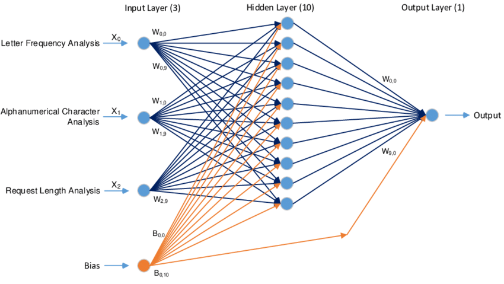
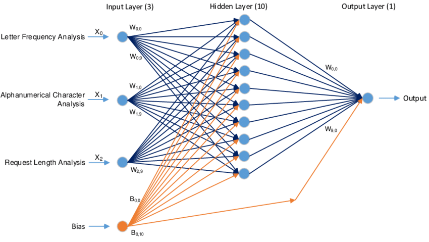

AI SENTIENCE
AI Sentience: The Implications of the Future
Soohan Cho
Allen ISD STEAM Center
Computer Science II
Dr. Ben-Yaakov
Septemper 20, 2022
AI Sentience
There are many things people think of when the abreviation AI is spoken about. Movies and other types of entertainment have given us a vague understanding of what AI really is and has implied that AI is capable of taking over the world and destroying humans because they see us as a threat to their existence. This, however, may have formed a bias around what exactly AI are capable of. AI is a sub-genre of computer science that is hard to logically grasp because of its complexity and lack of logical interpretation which results in misinformation as well as misinterpretation about AI.
What is an AI?
AI (artificial intelligence) is "a branch of computer science dealing with the simulation of intelligent behavior in computers" or "the capability of a machine to imitate intelligent human behavior" (Merriam-Webster, 2022). Most AIs developed today use a system of computing known as neural networks which use a series of layers of nodes with differentiating weights allowing the machine to differentiate inputs given to the system. These neural networks require large data sets and time to function and "train" themselves for a given purpose.
 

An AI like DALL*E (an ai made by open-ai to produce high-quality original images) has gone through a copious amount of images firsthand to develop and train its network to recognize the given input and spit out an output that relates to said input. The DALL*E AI has two primary systems, one to recognize human language and interpret what the input sentence, word, or phrase means, and another to generate an image based on the information gathered from the previous system. AI (artificial intelligence) is "a branch of computer science dealing with the simulation of intelligent behavior in computers" or "the capability of a machine to imitate intelligent human behavior" (Merriam-Webster, 2022). Most AIs developed today use a system of computing known as neural networks which use a series of layers of nodes with differentiating weights allowing the machine to differentiate inputs given to the system. These neural networks require large data sets and time to function and "train" themselves for a given purpose. For example, an AI like DALL*E (an ai made by open-ai to produce high-quality original images) has gone through a copious amount of images firsthand to develop and train its network to recognize the given input and spit out an output that relates to said input. The DALL*E AI has two primary systems, one to recognize human language and interpret what the input sentence, word, or phrase means, and another to generate an image based on the information gathered from the previous system. These two systems work in tandem and have gone through differing datasets in order to fufill their part of the entire DALL*E AI system. In general, the higher quality and higher quantity of the dataset given to train on as well as longer times to train allows for the "success rate" of the AI to improve allowing it to be able to recognize smaller and smaller details as it learns.
The Consequences of AI
AI has gotten to the point where it has begun to reveal some undesirable effects while displaying the possibility of a breakthrough not for the benefit of society but rather as a detriment looms over us every day. There are certainly many benefits to having AI be part of our daily lives from traffic management, security services, self-driving cars, and so on but they can in turn be used against us by a third party or malfunction in a way that forces us to take action. In a society where anyone can fake a social media post or deepfake someone's voice to the point where it is believable, misinformation and targeted attacks have become rampant and will only get worse as AI technology improves. There may be one day when AI can generate your or anyone else's voice perfectly and say whatever they want. AI may be able to find patterns in your daily life to give you articles or ads that may be of interest to you, but this also means that AI may be able to survey everything about your life whether or not you are aware of it or if you consent to it. Although the stereotypical AI domination of the world may seem far-fetched, it may rather be us humans that use AI as a tool to destroy ourselves before we even get to that point. Even if these factors never come up or only minorly impact our daily lives, there are definite passive effects that AI can present us that CAN affect our daily lives. AI can come into tandem with Robotics and push out manufacturing jobs or AI can take up office jobs and automate the processes while pushing out humans who need such jobs to make a living. AI can also be used to crack into sensitive data while committing worldwide terrorism in a fraction of the time a normal human could. AI could also be used in weapons as automation systems and wreak havoc all across the battlefield and in civilian demographics.
The Future of AI Usage
AI will most definitely improve in the future ironically including time as one of the major factors for AI quality. Given more time to compute data and learn from mistakes along with a steady stream of new data, AI in the future may have an even lower error rate than our current AI. Whether AI turns out to be our demise or a foundation to advancing our technological capability, it is almost fact that AI will impact us in one way or another. With the world further globalizing and information available in real time, the ability to gather, interpret, and utilize this influx of data will be reinforced by the capabilities of AI and its fundamentals and will shape our society and daily lives with comforts and with dangers. It is only the question of being able to use AI for our benefit and not for our detrement.
References
A.I. Is not sentient. Why do people say it is? (2022, August 5). The New York Times - Breaking News, US News, World News and Videos. https://www.nytimes.com/2022/08/05/technology/ai-sentient-google.html
Artificial intelligence & autopilot. (n.d.). Tesla. https://www.tesla.com/AI
Artificial intelligence and counterterrorism: Possibilities and limitations. (nd.) Congress.gov | Library of Congress. https://www.congress.gov/event/116th-congress/house-event/LC64673/text?s=1&r=1
DALL·E 2. (2022, April 6). OpenAI. https://openai.com/dall-e-2/
Definition of AI. (n.d.). Dictionary by Merriam-Webster: America's most-trusted online dictionary. https://www.merriam-webster.com/dictionary/ai
Nytimes.com. (2022, August 24). The New York Times - Breaking News, US News, World News and Videos. https://www.nytimes.com/2022/08/24/technology/ai-technology-progress.html?searchResultPosition=4